Entry
まずはここから
第6期生はもちろん、過去の期や大学生・社会人を問わず、世界一周大学に関わる方なら参加できます。
上のフォームから説明会に申し込む
登録メールに届くZoomへ参加
当日メールアドレスを使ってLinkedInに登録
申込フォームを開く（Tally）
埋め込みが表示されない場合： https://tally.so/r/ob491V
Online orientation 2026.10.18
世界一周大学で得た経験は、まだ見ぬ人や仕事につながる。 はじめてのLinkedInを、みんなで一緒に始める1時間です。
Why LinkedIn?
社会と本当につながる場所は、LinkedInです。
仕事やキャリアをきっかけに、人と人がつながるSNS。 求人やスカウトが集まる場所でもあり、学び続ける自分を更新していくパーソナルブランディングの場所でもあります。 特別な肩書がなくても、今の挑戦を言葉にすれば始められます。
1年生から4年生まで、早期から使うほど就活で差がつきます。世界一周大学の旅やフィールドワークは、履歴書だけでは伝わらない。LinkedInなら物語として残せます。
ビジネスをしている人、自分で事業をしている人、グローバルで活躍したい人。日本にいながら世界と仕事したい人も、LinkedInは欠かせないツールです。
Instagramで旅を残すのも、もちろんありです。LinkedInでは、その経験をキャリアや次の挑戦につながる形でも残せます。
Who it's for
海外移住や大企業の経営層だけの話ではありません。 日々学んでいること、挑戦していることを記録し、会いたい人とつながる。それだけで十分価値があります。
就活だけでなく、インターンやメンター探しにも。世界一周大学で積んだ経験を、社会人の目に触れる形で残せます。
転職・副業・協業の入口になるほか、自分の専門性やビジョンを発信してブランドを育てられます。仕事の募集も多く、逆にオファーが来ることもあります。
Instagramで旅や日常を共有するのも、ひとつのいい方法です。
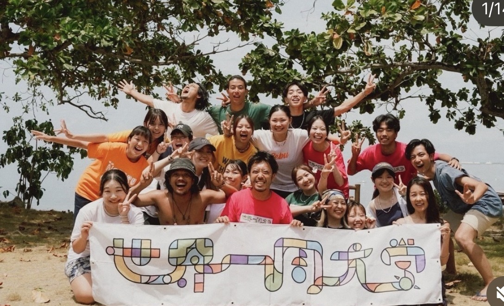
Two connected events
まずオンラインでLinkedInを知り、アカウントを作る。 その先には、10月26日のLinkedInオフィスイベントが待っています。
LinkedInの基本を知り、メールアドレスでアカウントを作成します。
19:30–21:30。六本木・東京ミッドタウンのLinkedIn Japanオフィスへ。石坂誠（Makoto Ishizaka）さんと山元が一緒に講演する予定です。
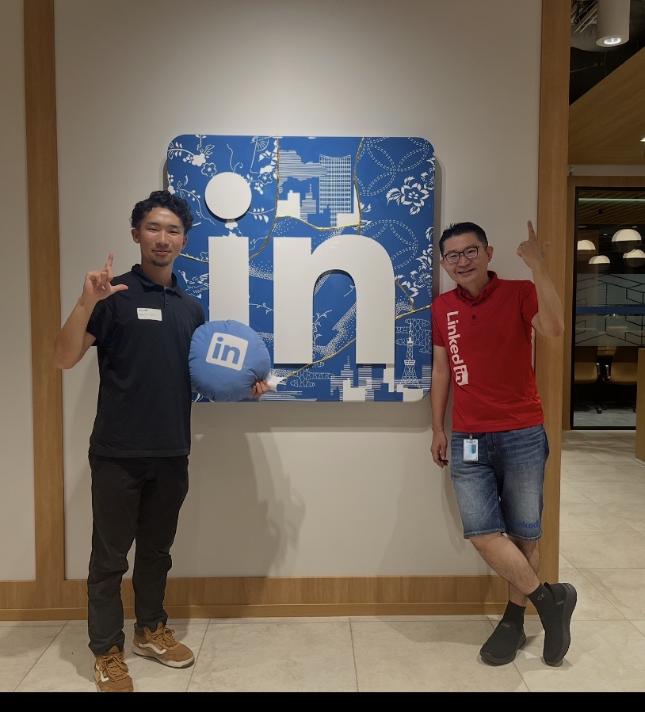
Navigator
「LinkedInって意識高そう」「何を書けばいいかわからない」。 そんな状態からで大丈夫です。
僕自身、LinkedInから仕事の依頼をもらった機会がたくさんあります。 Microsoft、Amazon、Google、Meta、Apple、Netflix、Sony、Deloitte、KPMG、EY、Goldman Sachsなど さまざまな企業の方とつながり、社長やスタートアップの経営者・マネージャーなど、 本当にいろんな方と200人以上話してきました（つながり 7,200+）。
本社や日本オフィス、Student Club。石坂誠さんをはじめ多くの方に教わりながら、 つながりを広げてきました。特別な肩書ができてから始める必要はなく、 今の挑戦を伝えるところから一緒に始めましょう。
Real experience
求人を探す場所であると同時に、スカウトや協業のオファーが届く場所。 社会人として成長し、ブランドを育て、就活も転職も前に進める。僕はその両方をLinkedInで経験してきました。
運をつかむ ＝ 準備の質 × 機会の数 LinkedIn本社訪問で学び、今も大切にしている言葉
サンフランシスコの本社と日本オフィスを訪問し、LinkedInで働く方々からキャリア、学び続ける姿勢、機会をつかむ準備について直接学びました。
石坂誠（Makoto Ishizaka）さんとシアトル・サンフランシスコで企業訪問。日本オフィスでも学び、10月26日は同じオフィスで一緒に講演します。LinkedInの使い方だけでなく、人との信頼を次の出会いへつなげる姿勢を教えていただきました。
僕がリーダーを務めた Global Career Community（グローバルキャリアコミュニティ） では、シアトル・サンフランシスコでの企業訪問（Google本社での学びなど）やキャリアイベントを運営してきました。
LinkedIn Student Clubと、僕がリーダーを務めるグローバルキャリアコミュニティで、何度も一緒に 学生向けのイベントを開催し、LinkedInの魅力を広めてきました。司会や登壇も担当しています。 学生100人以上に、社会につながる使い方を伝え、今の就活・キャリアに実質役立つ プロフェッショナルなつながりの作り方を、学生から社会に向けて発信してきました。
Instagramで活動の様子を発信しています。下の動画は、コミュニティで実際に行った学びのひとつです（Google訪問のシーンから再生）。
YouTubeで動画を見る ↗Personal branding
1時間ですべては完成させません。まずは、この3つが見えるプロフィールを目指します。
現在の所属、役割、興味がひと目で伝わる。
旅や挑戦を、行動と学びの物語として残す。
会いたい人や次の挑戦につながる意思を示す。
60-minute program
Next adventure
10月26日は、六本木・東京ミッドタウン・タワー8階のLinkedIn Japanオフィスで学ぶ特別な2時間。 僕は以前、このオフィスを訪れました。次は、みんなと一緒に「中」へ入ります。
当日は、LinkedIn Japanの 石坂誠（Makoto Ishizaka）さん と一緒に講演する予定です。オンラインでLinkedInを知ったあと、リアルなオフィスでつながりの先を体験しましょう。
2026年10月26日（月）19:30–21:30
LinkedIn Japanオフィス（六本木）｜ハイブリッド開催予定
参加条件：LinkedInアカウント作成済み
Where we're going
六本木・東京ミッドタウン。木組みと金継ぎがモチーフの LinkedIn Japan オフィス。10月26日はここで一緒に学びます。
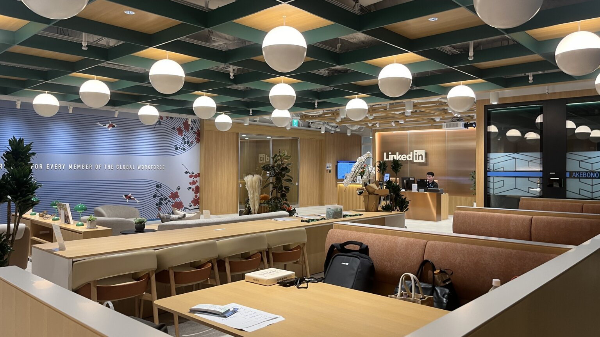
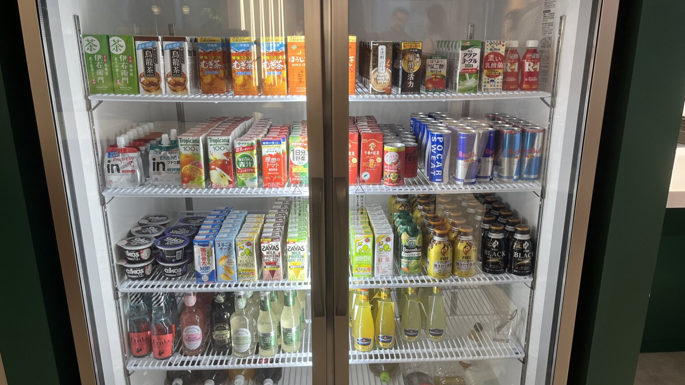
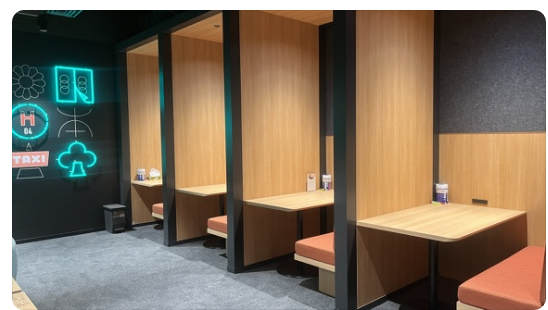
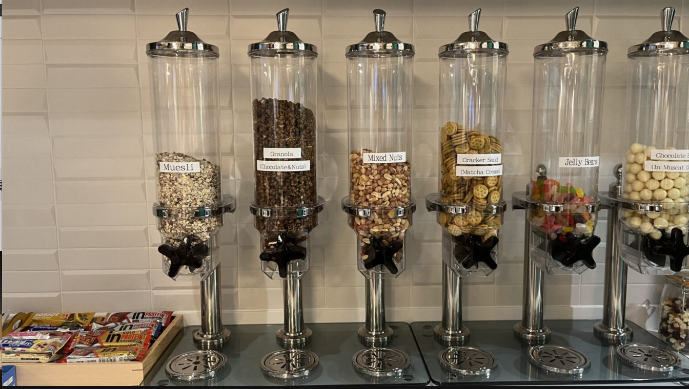
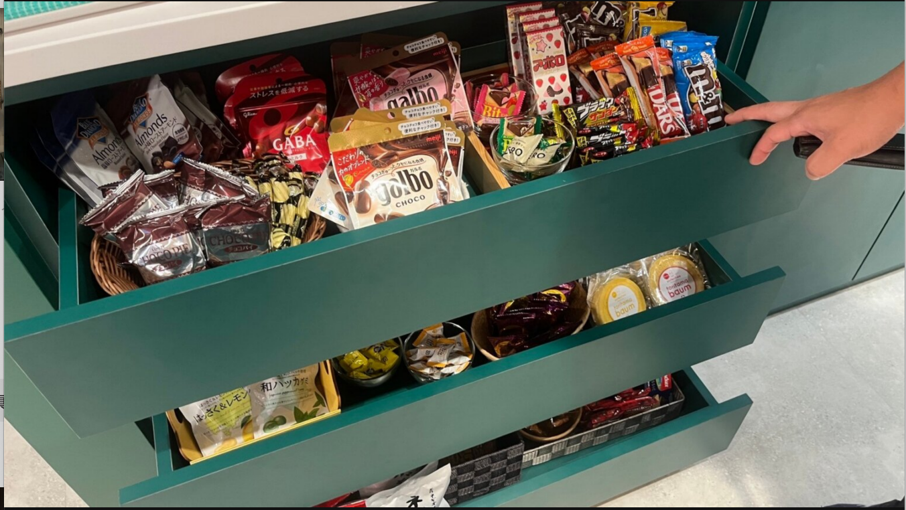
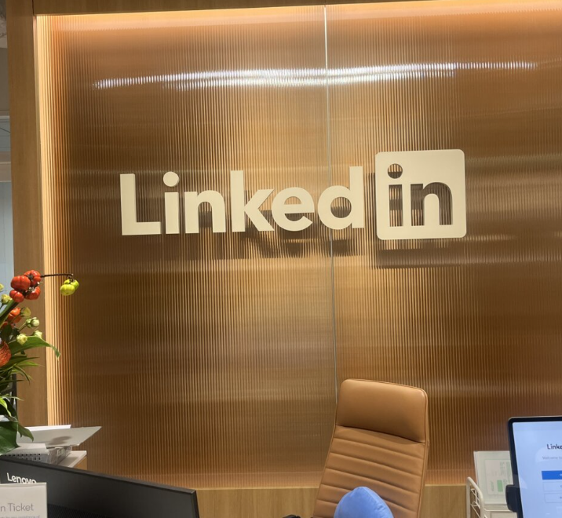
オフィス内の様子は MICE TIMES「リンクトイン・ジャパンでMICEを探る」 （2024年取材）でも紹介されています。
Your stories matter
仲間との旅、想定外の出来事、挑戦した瞬間。 写真の奥にある経験と言葉をLinkedInに残せば、まだ会ったことのない人にも、あなたらしさが伝わります。
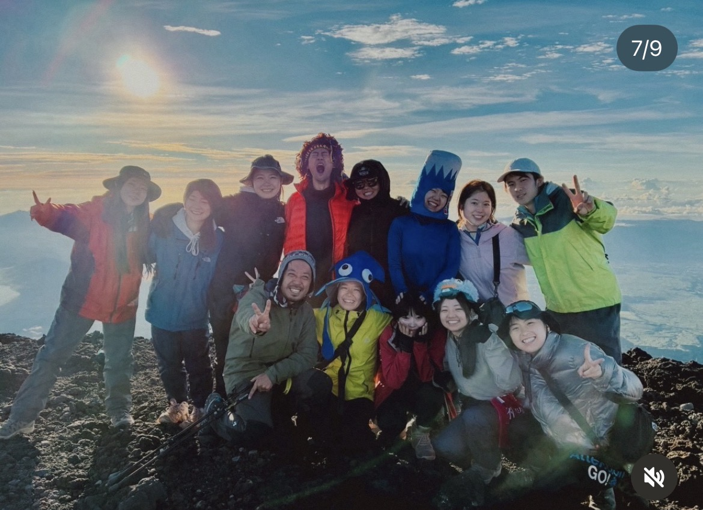
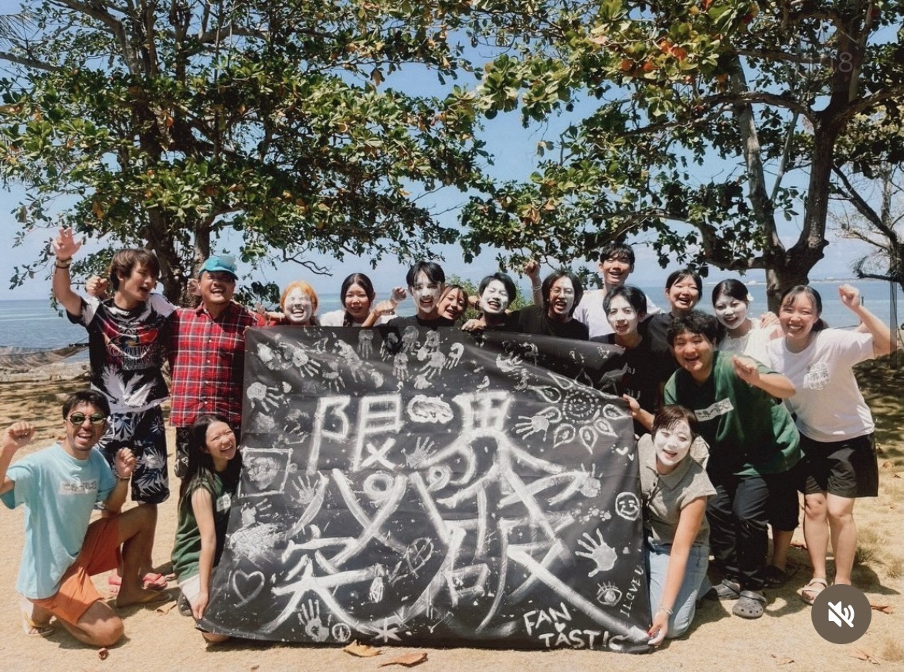
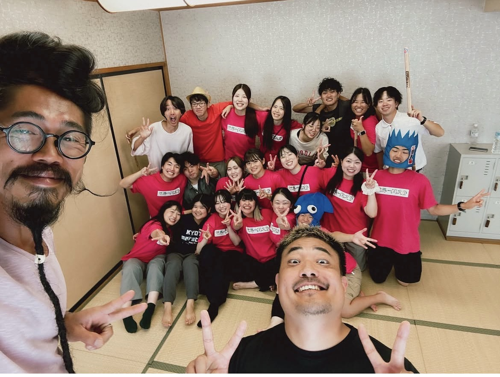
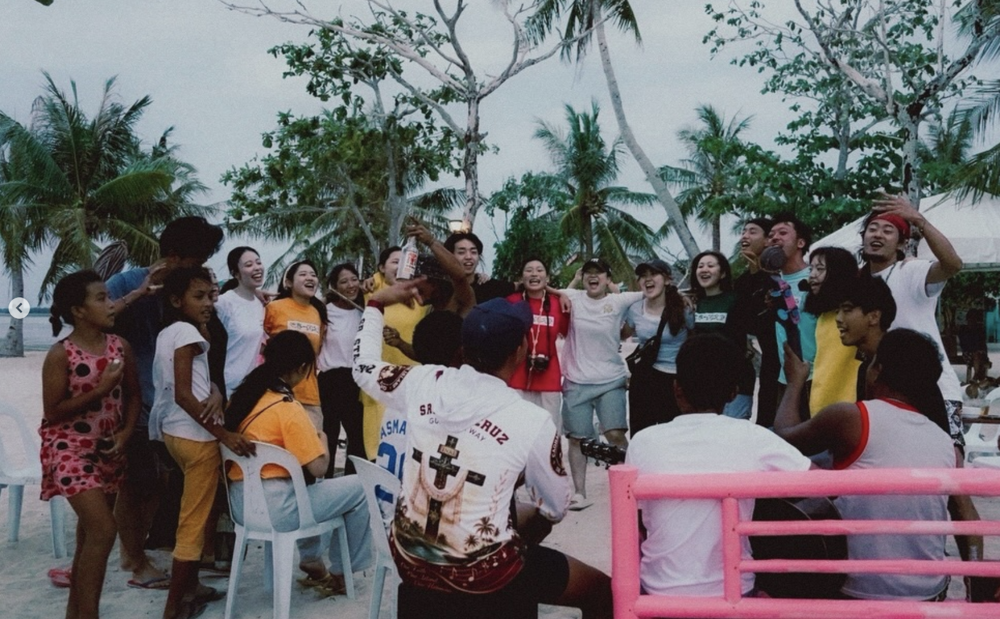
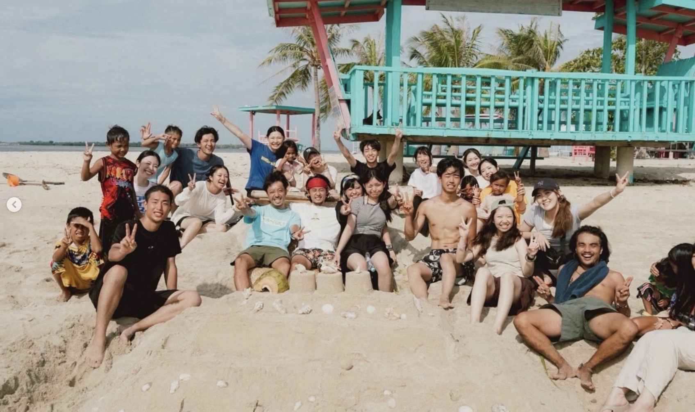
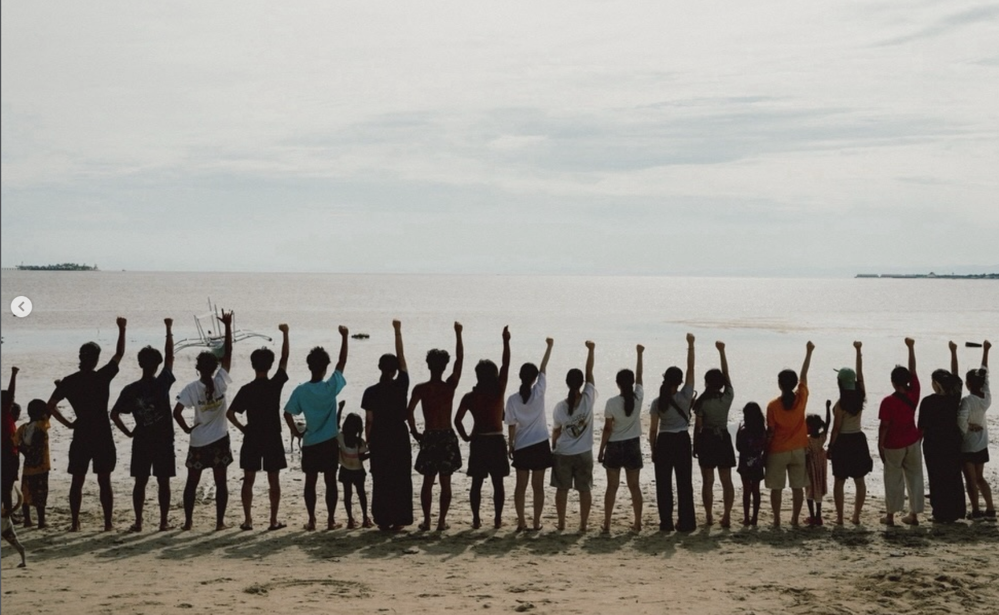
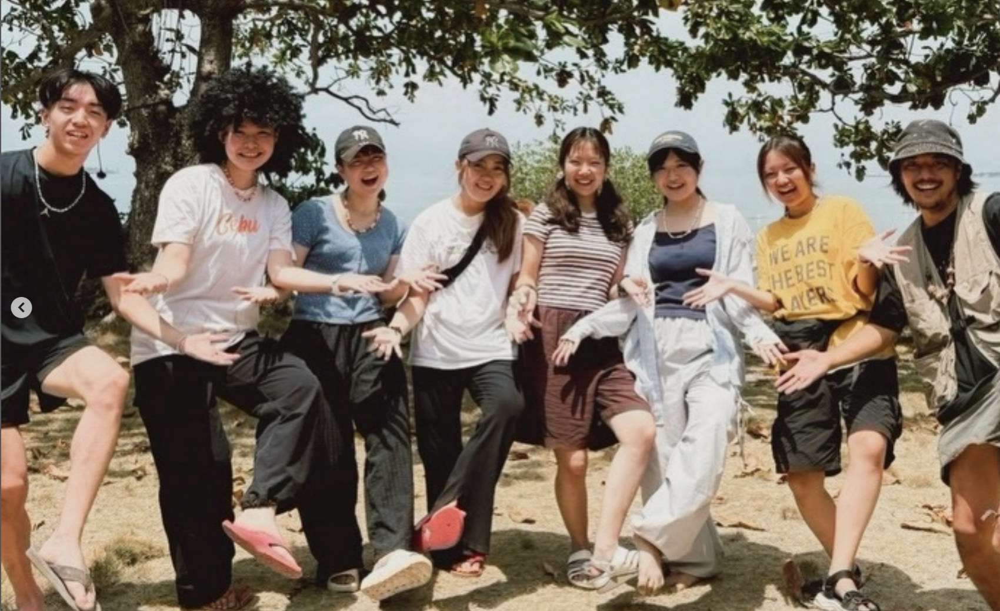
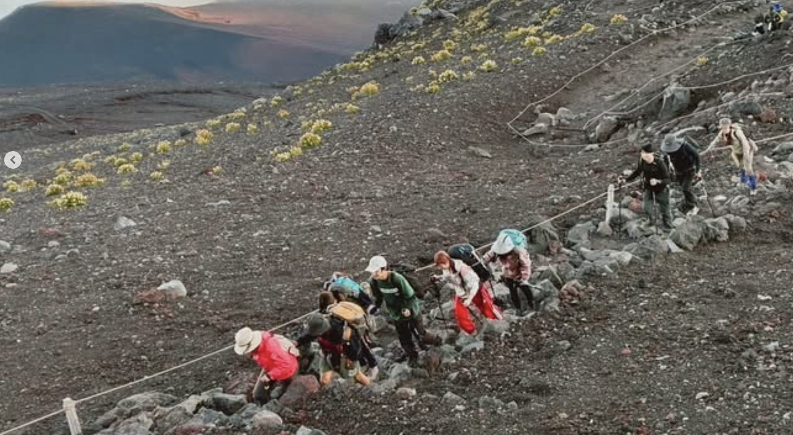
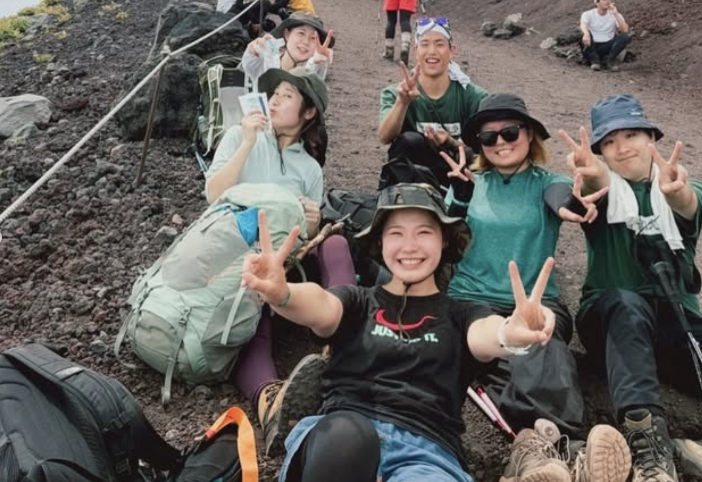
Entry
第6期生はもちろん、過去の期や大学生・社会人を問わず、世界一周大学に関わる方なら参加できます。
上のフォームから説明会に申し込む
登録メールに届くZoomへ参加
当日メールアドレスを使ってLinkedInに登録
埋め込みが表示されない場合： https://tally.so/r/ob491V
FAQ
もちろんです。この説明会は、初めての方がLinkedInを知り、その場で登録するための時間です。
はい。過去の期を含め、世界一周大学に関わる大学生・社会人のみなさんが対象です。
はい。転職・協業・クライアント獲得、グローバルな仕事の入口としてLinkedInは非常に有効です。求人に応募するだけでなく、発信からオファーが来ることもあります。
Instagramを続けながら、LinkedInアカウントを持っておく方が多いです。就活やビジネスにつなげたい経験は、LinkedInにも載せておくと後から活きます。
パソコンまたはスマートフォンと、LinkedIn登録に使えるメールアドレスをご用意ください。
10月26日の参加にはLinkedInアカウントが必要です。初めての方は、10月18日の説明会で一緒に登録することをおすすめします。